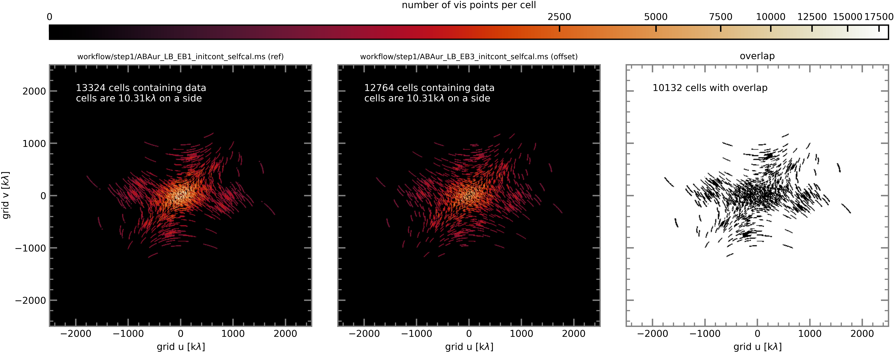
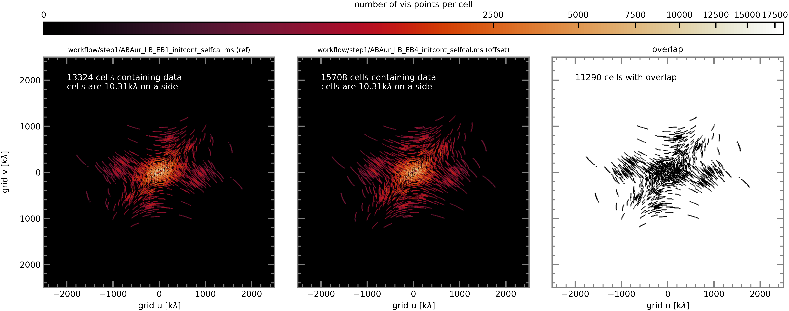
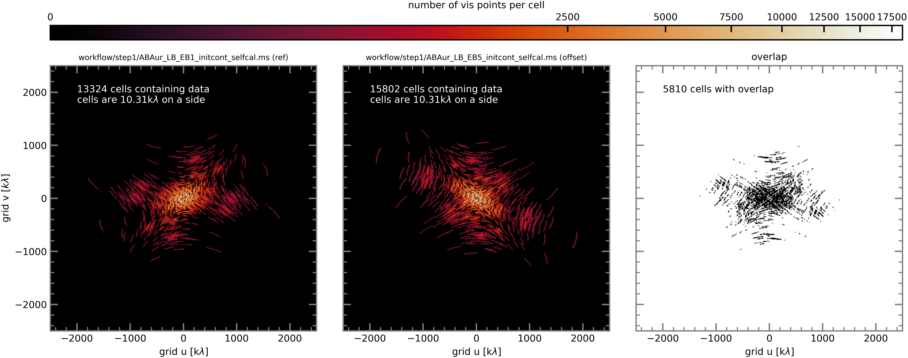

Scripts for Step 2 - Phase alignment:
step2_phase_alignment.py # main script (using modular CASA)
dictionary_data.py # loads data_dict
alignment.py # exoALMA visibility alignment functions (not yet public)
Align Long-Baseline Execution Blocks#
Out of the 6 long-baseline execution blocks, LB_EB1 has the highest SNR and the best weather. We chose LB_EB1 to be our reference LB execution and align all other EBs to it.
The following plots show the number of visibility points per cell for the reference EB and each of the to-be-aligned EBs, after the visibilities have been gridded in uv-space. The grid cell size in uv-space was chosen to correspond to ‘imsize’ and ‘cellsize’ values that we’ve used so far to make images in xy-space.
For LB EBs: npix=2000, cellsize=0.01 (compare to exoALMA: npix=1024, cellsize=0.01)
For SB EBs: npix=500, cellsize=0.04 (compare to exoALMA: npix=102, cellsize=0.1)
In cells that contain visibility points from both the reference (LB EB1) and comparison EB, the alignment code calculates the difference between their phases. This is done iteratively while sequentially shifting the comparison EB north/south east/west to map out a potential well. The code then returns the location of the minimum, i.e., the offset in arcseconds by which the comparison EB must be shifted in order for it to be aligned with the reference.
LB EB2#

LB EB3#
{kind=link}
LB EB4#
{kind=link}
LB EB5#
{kind=link}
LB EB6#

After aligning the EBs, we run the code again, this time on the aligned EBs, to check that their offsets are small (i.e. a fraction of a cell size).